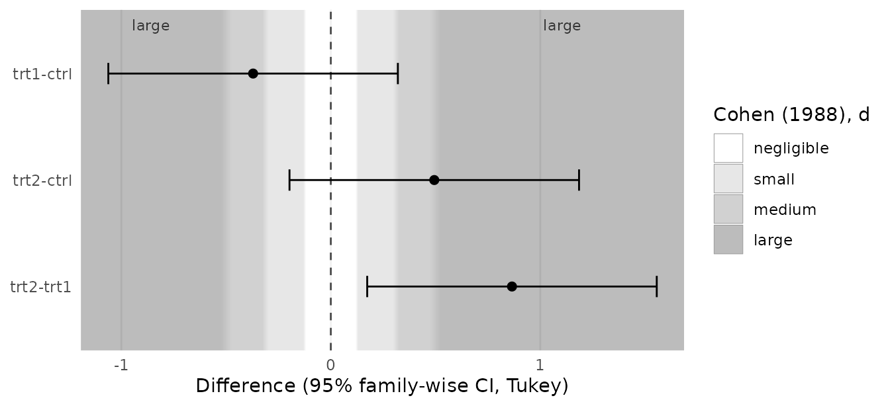
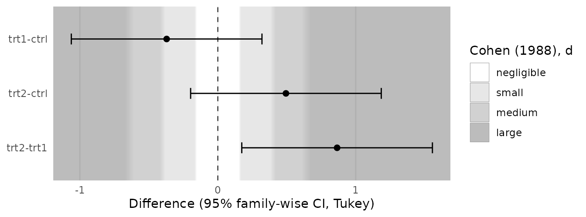
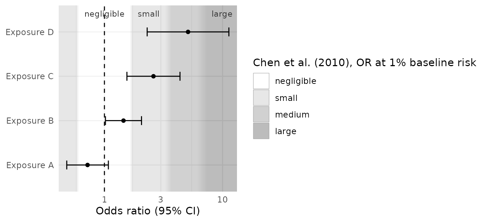
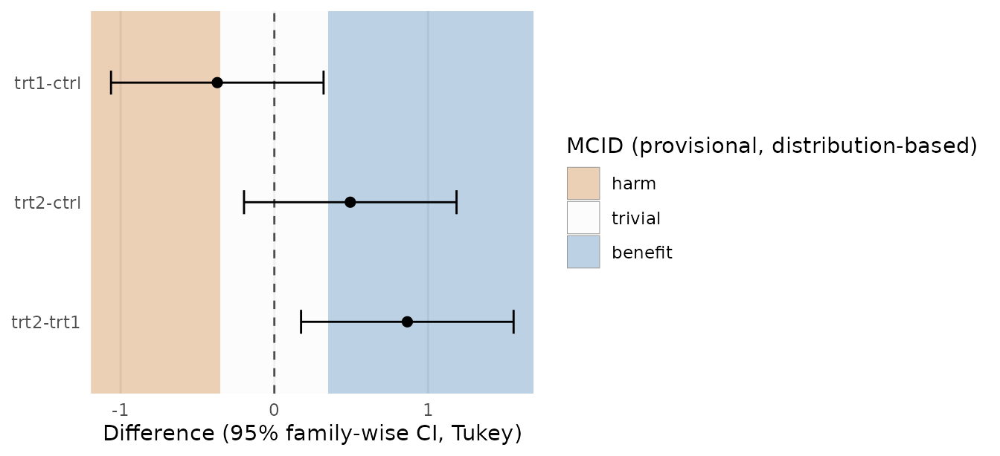
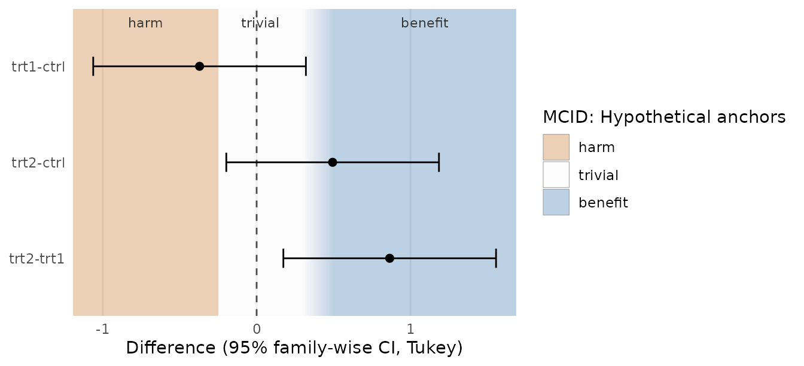
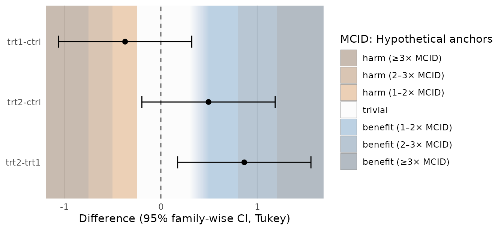
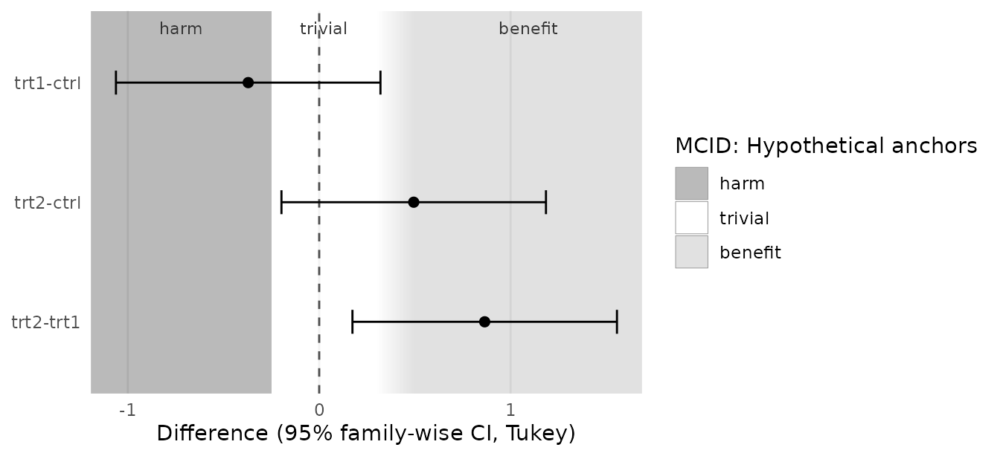

effectzones draws a background behind estimates and confidence intervals. The background marks regions of the effect axis that someone has judged “small”, “large”, “clinically trivial” or “beneficial”. The package never looks at your estimates: it does not test them, classify them or compute any probability. You read the interval against the background, and you decide what it means.
Why backgrounds instead of verdicts
A confidence interval already contains the inferential information: the range of effects compatible with the data under the model. What readers often lack is a reference frame for magnitude. Is a difference of 0.5 kg large? Is an odds ratio of 1.4 worth acting on? Benchmarks answer that question, imperfectly, and putting them behind the interval shows the interval and the benchmark together without merging them into a verdict.
A verdict (“likely beneficial”, “trivial”) hides two things: where the interval lies relative to the threshold, and how arbitrary the threshold is. A background shows both. An interval that straddles a boundary is visibly ambiguous; a soft, fading boundary is visibly a convention, not a natural discontinuity.
The basic plot, a Tukey post-hoc comparison over effect-size zones:
fit <- aov(weight ~ group, data = PlantGrowth)
plot_contrasts(
TukeyHSD(fit),
zones = geom_es_zones(es_benchmarks("cohen_d"), labels = TRUE),
model = fit
)
#> ℹ Converting d thresholds with the model's pooled (residual) SD = 0.623.
#> Set `sd` in the zones layer to use a different SD.
Two layers do the work, and you can use them in any ggplot:
-
geom_es_zones(): effect-size magnitude zones, symmetric around the null. -
geom_mcid_zones(): harm / trivial / benefit zones from a minimal clinically important difference (MCID).
Add the zones layer first, so that points, error
bars and reference lines are drawn on top of it. By default the zones do
not change the axis limits: they fill whatever range your data define,
and the outermost zones extend to the panel edges. Use
expand = TRUE if every cut-point should be visible.
Choosing a benchmark set, and why there is no default
geom_es_zones() has no default thresholds. Calling it
without them is an error that lists the published sets:
geom_es_zones()
#> Error in `geom_es_zones()`:
#> ! `thresholds` is required: there is no default benchmark set.
#> ℹ Cohen (1988) offered his d = 0.2/0.5/0.8 only as a fallback; choose
#> thresholds that suit your field.
#> ℹ Published sets: "cohen_d", "sawilowsky_d", "cohen_r", "funder_ozer_r",
#> "gignac_szodorai_r", "cohen_eta2", "cohen_f", or "chen_or", e.g. `thresholds
#> = es_benchmarks("cohen_d")`.
#> ℹ Or define your own with `es_thresholds()`.This is deliberate. Cohen (1988) proposed d = 0.2, 0.5 and 0.8 as conventions to fall back on when nothing better is known about the area of research, and warned against using them mechanically. Later sets were derived from what is typical in particular literatures: Gignac & Szodorai (2016) from meta-analytic correlations in individual-differences research, Funder & Ozer (2019) from a broader argument about psychological effects. A “medium” effect in one field is large in another. Choosing the set is a substantive decision, and the plot should record it: the legend title names the source.
es_benchmarks()
#> "cohen_d": d, cuts 0.2, 0.5, and 0.8 (Cohen (1988), d)
#> "sawilowsky_d": d, cuts 0.01, 0.2, 0.5, 0.8, 1.2, and 2 (Sawilowsky (2009), d)
#> "cohen_r": r, cuts 0.1, 0.3, and 0.5 (Cohen (1988), r)
#> "funder_ozer_r": r, cuts 0.05, 0.1, 0.2, 0.3, and 0.4 (Funder & Ozer (2019), r)
#> "gignac_szodorai_r": r, cuts 0.1, 0.2, and 0.3 (Gignac & Szodorai (2016), r)
#> "cohen_eta2": eta2, cuts 0.01, 0.06, and 0.14 (Cohen (1988), η²)
#> "cohen_f": f, cuts 0.1, 0.25, and 0.4 (Cohen (1988), f)
#> "chen_or": or, cuts 1.68, 3.47, and 6.71 (Chen et al. (2010), OR at 1% baseline
#> risk)If your field has its own thresholds, use them:
my_cuts <- es_thresholds(
cuts = c(0.1, 0.3),
labels = c("trivial", "modest", "substantial"),
metric = "d",
source = "Protocol v2, section 9"
)
my_cuts
#> <es_thresholds> on the "d" scale
#> trivial: |effect| in [0, 0.1)
#> modest: |effect| in [0.1, 0.3)
#> substantial: |effect| in [0.3, Inf)
#> Source: Protocol v2, section 9The cited sources define cut-points. The label of the innermost zone (“negligible”) is a convention of this package, not of the sources.
Converting thresholds to the plot scale, and which SD to use
Benchmarks are usually standardised; estimates are often not. Contrasts from an ANOVA are differences in the outcome’s own units, so standardised thresholds have to be converted: a cut d is drawn at d × SD.
to_plot_scale(es_benchmarks("cohen_d"), sd = 2)
#> <es_thresholds> on the "raw" scale
#> negligible: |effect| in [0, 0.4)
#> small: |effect| in [0.4, 1)
#> medium: |effect| in [1, 1.6)
#> large: |effect| in [1.6, Inf)
#> Source: Cohen J (1988). Statistical Power Analysis for the Behavioral Sciences,
#> 2nd ed. Hillsdale, NJ: Lawrence Erlbaum. Cohen offered these values as
#> conventions for use only when no better basis for judging magnitude is
#> available.
#> Note: d cut-points multiplied by SD = 2.Which SD to use is not a technicality.
- The residual (pooled within-group) SD of the model,
pooled_sd(fit), is the usual choice for between-group contrasts and is whatplot_contrasts()uses when you passmodel(it prints a message saying so). - A baseline or reference-population SD may be more appropriate when the benchmark was defined relative to it, or when the treatment changes the variance.
- In models with several variance components (repeated measures, random effects) there is no single SD; supply the one your benchmark refers to.
plot_contrasts(
TukeyHSD(fit),
zones = geom_es_zones(es_benchmarks("cohen_d"), sd = 0.8)
)
For ratios (odds ratios, risk ratios), zones are
symmetric on the log scale around 1: a cut c is drawn at c and 1/c. Use
scale = "log", null = 1, and a log axis:
or <- data.frame(
term = c("Exposure A", "Exposure B", "Exposure C", "Exposure D"),
estimate = c(0.72, 1.45, 2.60, 5.10),
lower = c(0.48, 1.02, 1.55, 2.30),
upper = c(1.08, 2.06, 4.36, 11.3)
)
ggplot(or, aes(estimate, term)) +
geom_es_zones(es_benchmarks("chen_or"), scale = "log", null = 1,
labels = TRUE) +
geom_vline(xintercept = 1, linetype = 2) +
geom_errorbar(aes(xmin = lower, xmax = upper), width = 0.2) +
geom_point() +
scale_x_log10() +
labs(x = "Odds ratio (95% CI)", y = NULL) +
theme_minimal()
Chen, Cohen & Chen (2010) derived these odds ratios as the
equivalents of d = 0.2, 0.5 and 0.8 when the event rate in the
reference group is 1%. At higher baseline risks the equivalent
odds ratios are smaller, so the "chen_or" zones are only
appropriate near that baseline.
Alternatively, standardised thresholds can be converted to odds ratios with the approximation log(OR) = d × π / √3 (Chinn 2000), which assumes a logistic latent variable. Note that it gives different cut-points from Chen et al.:
to_plot_scale(es_benchmarks("cohen_d"), scale = "log")$cuts
#> [1] 1.437291 2.476632 4.267548Correlations, η² and Cohen’s f are drawn on their own scale only; there is no conversion from them to raw differences.
Anchor-based and distribution-based MCIDs
The MCID was introduced as “the smallest difference in score in the domain of interest which patients perceive as beneficial” (Jaeschke, Singer & Guyatt 1989). It is a statement about patients, so the preferred way to estimate it is anchor-based: relate score changes to an external judgement such as a global rating of change.
Distribution-based values (half an SD, one standard error of measurement) describe the spread or the measurement error of the score, not what patients value. McGlothlin & Lewis (2014) point out that such values are not patient-derived. effectzones never computes an MCID for you; if you want a distribution-based value you have to ask for one, and the legend marks it provisional:
prov <- mcid_distribution(sd = 0.7, method = "half_sd")
prov
#> <mcid_thresholds> (higher_better)
#> harm: difference < -0.35
#> trivial: between -0.35 and 0.35
#> benefit: difference > 0.35
#> Provisional: not derived from patients' judgements.
#> Source: Half SD = 0.5 x 0.7 = 0.35. Norman GR, Sloan JA, Wyrwich KW (2003). Med
#> Care 41(5):582-592. Equal to Cohen's 'medium' d = 0.5. Distribution-based
#> values are not patient-derived (McGlothlin AE, Lewis RJ (2014). JAMA
#> 312(13):1342-1343) and are provisional until an anchor-based MCID is available.
plot_contrasts(TukeyHSD(fit), zones = geom_mcid_zones(prov))
Norman, Sloan & Wyrwich (2003) observed that many anchor-based
MCIDs for health-related quality of life are close to half an SD. But
half an SD is exactly Cohen’s “medium” d = 0.5. A distribution-based
MCID therefore adds no clinical information beyond effect-size mode: it
relabels the d = 0.5 boundary in clinical language. If no anchor-based
MCID exists, saying so and using geom_es_zones() is the
more honest presentation.
Within-patient MCIDs and between-group contrasts
Most MCIDs are defined for change within a patient: how much an individual’s score must move for that individual to notice. Contrasts from a trial or an ANOVA are differences between group means. Reading a between-group difference against a within-patient MCID is common, but contested: a mean difference smaller than the MCID can arise when a fraction of patients improve by much more than the MCID and the rest do not change, and a mean difference larger than the MCID does not imply that every patient improved by that much. The background shows where the estimate lies relative to the threshold; it cannot tell you how individual responses are distributed.
When you present group differences over MCID zones, say which kind of
MCID was used and where it comes from (source), and
consider reporting responder proportions alongside.
Asymmetric and uncertain MCIDs
Thresholds for deterioration and improvement need not be equal, and
the literature often gives more than one estimate of an MCID. Both are
supported: lower and upper are set separately,
and either can be a range.
thr <- mcid_thresholds(
lower = -0.25, # deterioration threshold
upper = c(0.3, 0.5), # improvement: two anchor studies disagree
source = "Hypothetical anchors"
)
thr
#> <mcid_thresholds> (higher_better)
#> harm: difference < -0.25
#> trivial: between -0.25 and [0.3, 0.5]
#> benefit: difference > [0.3, 0.5]
#> Source: Hypothetical anchors
plot_contrasts(TukeyHSD(fit), zones = geom_mcid_zones(thr, labels = TRUE))
A range is drawn as a fade from one zone into the next across the
whole range, so the reader sees where the threshold is uncertain instead
of a sharp line placed at an arbitrary point within it. Point thresholds
have hard edges unless you set softness.
With beyond = "multiples" the colour keeps deepening at
2× and 3× the MCID, so an estimate just past the threshold and one far
beyond it do not share a background:
plot_contrasts(TukeyHSD(fit),
zones = geom_mcid_zones(thr, beyond = "multiples"))
If lower values of the outcome are better (pain, symptom scores), set
direction = "lower_better" and the benefit and harm sides
swap.
For black-and-white output use palette = "grey". Grey
levels have no natural direction, so add labels = TRUE or
keep the legend:
plot_contrasts(TukeyHSD(fit),
zones = geom_mcid_zones(thr, palette = "grey", labels = TRUE))
Why the package does not classify results
It would be easy to add a function that reports, for each estimate, the zone its point estimate falls in, or the probability that the true effect is “beneficial”, “trivial” or “harmful”. effectzones deliberately does not.
That procedure is known as magnitude-based inference (Batterham & Hopkins 2006). Its classifications look like conclusions, but they interpret a confidence interval as if it were a posterior distribution under an implicit flat prior. Welsh & Knight (2015) showed that it is neither a sound frequentist nor a coherent Bayesian procedure, and Sainani (2018) showed that its type I error rates can be several times those of standard hypothesis tests, depending on sample size and thresholds. A plotting package that printed such labels would lend them authority they do not have.
The zones are a reading aid. The inference is the interval; the judgement is yours, and it should be argued in the text, with the thresholds and their source stated.
References
Batterham AM, Hopkins WG (2006). Making meaningful inferences about magnitudes. International Journal of Sports Physiology and Performance 1(1):50-57.
Chen H, Cohen P, Chen S (2010). How big is a big odds ratio? Interpreting the magnitudes of odds ratios in epidemiological studies. Communications in Statistics - Simulation and Computation 39(4):860-864.
Chinn S (2000). A simple method for converting an odds ratio to effect size for use in meta-analysis. Statistics in Medicine 19(22):3127-3131.
Cohen J (1988). Statistical Power Analysis for the Behavioral Sciences, 2nd ed. Hillsdale, NJ: Lawrence Erlbaum.
Funder DC, Ozer DJ (2019). Evaluating effect size in psychological research: sense and nonsense. Advances in Methods and Practices in Psychological Science 2(2):156-168. doi:10.1177/2515245919847202
Gignac GE, Szodorai ET (2016). Effect size guidelines for individual differences researchers. Personality and Individual Differences 102:74-78. doi:10.1016/j.paid.2016.06.069
Jaeschke R, Singer J, Guyatt GH (1989). Measurement of health status: ascertaining the minimal clinically important difference. Controlled Clinical Trials 10(4):407-415. doi:10.1016/0197-2456(89)90005-6
McGlothlin AE, Lewis RJ (2014). Minimal clinically important difference: defining what really matters to patients. JAMA 312(13):1342-1343.
Norman GR, Sloan JA, Wyrwich KW (2003). Interpretation of changes in health-related quality of life: the remarkable universality of half a standard deviation. Medical Care 41(5):582-592.
Sainani KL (2018). The problem with “magnitude-based inference”. Medicine & Science in Sports & Exercise 50(10):2166-2176.
Sawilowsky SS (2009). New effect size rules of thumb. Journal of Modern Applied Statistical Methods 8(2):597-599.
Welsh AH, Knight EJ (2015). “Magnitude-based inference”: a statistical review. Medicine & Science in Sports & Exercise 47(4):874-884.
Wyrwich KW, Tierney WM, Wolinsky FD (1999). Further evidence supporting an SEM-based criterion for identifying meaningful intra-individual changes in health-related quality of life. Journal of Clinical Epidemiology 52(9):861-873.